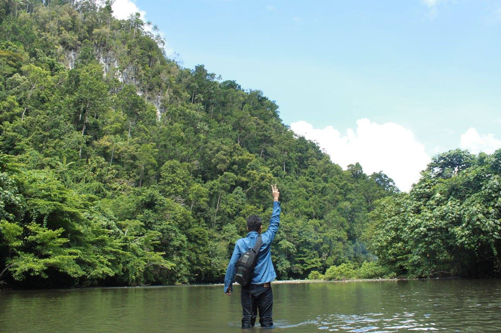

Talking With Ryan in Raja Ampat, We trust
10M views · 6 months ago
Talking With Ryan in Raja Ampat, the wonder from Papua Indonesias
3.4M views · 6 months ago
Talking With Ryan in Raja Ampat, We trust
10M views · 6 months ago